Worth Watching -- Charts
ⓘ Notes
20 tickers as of 2026-10-28, in the same order as the table above. Bars: blue = this ticker, green tick = grinder archetype avg, orange tick = rocket archetype avg. Screener output, not a recommendation.
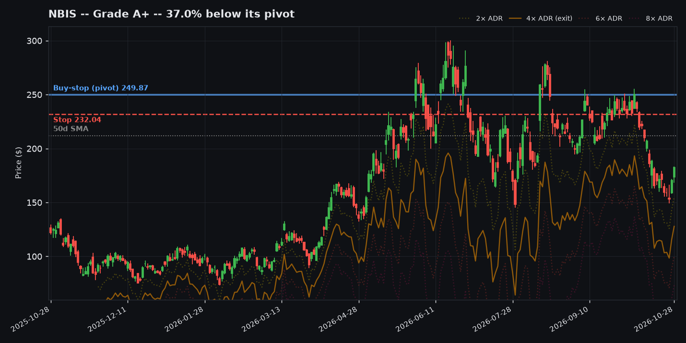
Communication Services -- Grade A+ -- 37.0% below its pivot
Pivot 249.87 / Stop 232.04 / ADR% 7.1%
Why score +5
- QM setup: the stronger of the two strategies in the backtest (+1)
- Stage 1: breaking out of a base, early in a new trend (+1)
- 36% below the 52-week high: a real pullback (+1)
- ADR 7.1%: fast enough to run (+1)
- Price $250: $41 or more (0)
- Shakeout: dipped under its 20-day low and closed back up, market above its 200-day (+1)
Off 52wk high36.4%
Base tightness (10d/50d)1.3x
% above 50-day SMA-14.0%
% above 200-day SMA3.1%
ADR%7.1%
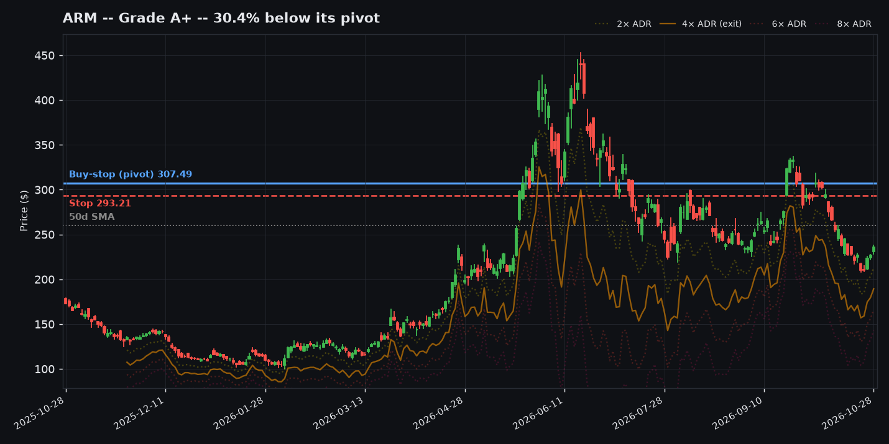
Information Technology -- Grade A+ -- 30.4% below its pivot
Pivot 307.49 / Stop 293.21 / ADR% 4.6%
Why score +5
- QM setup: the stronger of the two strategies in the backtest (+1)
- Stage 1: breaking out of a base, early in a new trend (+1)
- 46% below the 52-week high: a real pullback (+1)
- ADR 4.6%: fast enough to run (+1)
- Price $307: $41 or more (0)
- Shakeout: dipped under its 20-day low and closed back up, market above its 200-day (+1)
Off 52wk high46.3%
Base tightness (10d/50d)0.9x
% above 50-day SMA-9.3%
% above 200-day SMA3.5%
ADR%4.6%
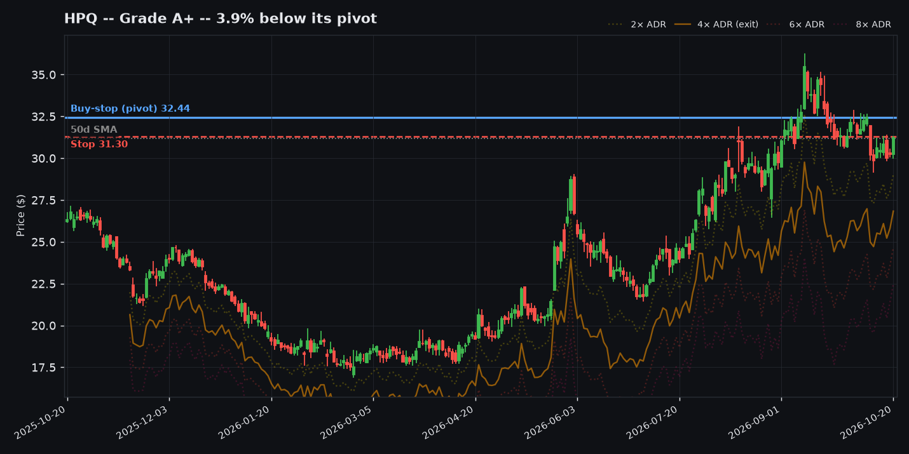
Information Technology -- Grade A+ -- 5.0% below its pivot
Pivot 34.09 / Stop 32.82 / ADR% 3.7%
Why score +4
- QM setup: the stronger of the two strategies in the backtest (+1)
- Stage 2: not Stage 1 (0)
- 9% below the 52-week high: a real pullback (+1)
- ADR 3.7%: fast enough to run (+1)
- Price $34: under $41, cheaper stocks ran further (+1)
- No shakeout in the last 10 days (0)
Off 52wk high8.5%
Base tightness (10d/50d)0.9x
% above 50-day SMA2.7%
% above 200-day SMA34.8%
ADR%3.7%
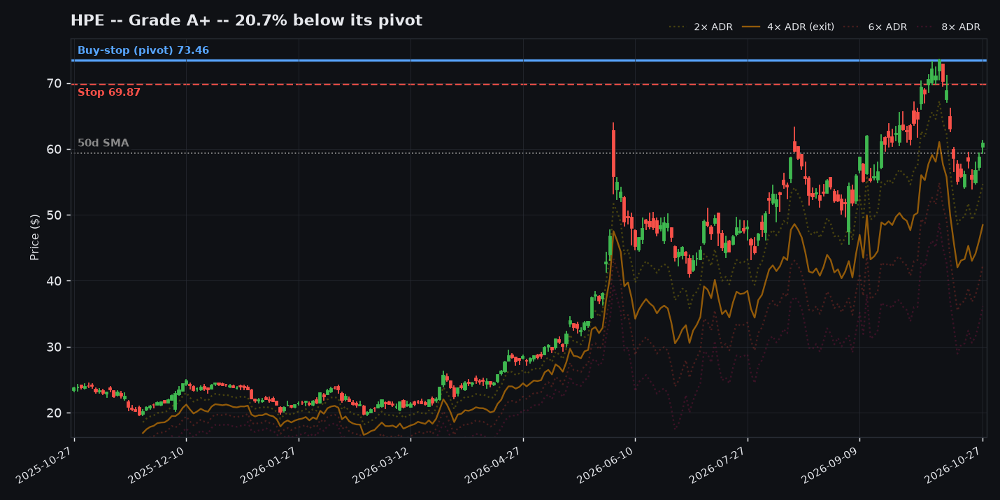
Information Technology -- Grade A+ -- 21.8% below its pivot
Pivot 73.46 / Stop 69.94 / ADR% 4.8%
Why score +4
- QM setup: the stronger of the two strategies in the backtest (+1)
- Stage 2: not Stage 1 (0)
- 18% below the 52-week high: a real pullback (+1)
- ADR 4.8%: fast enough to run (+1)
- Price $73: $41 or more (0)
- Shakeout: dipped under its 20-day low and closed back up, market above its 200-day (+1)
Off 52wk high17.9%
Base tightness (10d/50d)0.9x
% above 50-day SMA1.4%
% above 200-day SMA49.8%
ADR%4.8%

Health Care -- Grade A+ -- 14.8% below its pivot
Pivot 245.81 / Stop 220.42 / ADR% 10.3%
Why score +4
- QM setup: the stronger of the two strategies in the backtest (+1)
- Stage 2: not Stage 1 (0)
- 13% below the 52-week high: a real pullback (+1)
- ADR 10.3%: fast enough to run (+1)
- Price $246: $41 or more (0)
- Shakeout: dipped under its 20-day low and closed back up, market above its 200-day (+1)
Off 52wk high12.9%
Base tightness (10d/50d)1.5x
% above 50-day SMA19.1%
% above 200-day SMA152.7%
ADR%10.3%

Information Technology -- Grade A+ -- 14.0% below its pivot
Pivot 286.95 / Stop 270.32 / ADR% 5.8%
Why score +4
- QM setup: the stronger of the two strategies in the backtest (+1)
- Stage 2: not Stage 1 (0)
- 20% below the 52-week high: a real pullback (+1)
- ADR 5.8%: fast enough to run (+1)
- Price $287: $41 or more (0)
- Shakeout: dipped under its 20-day low and closed back up, market above its 200-day (+1)
Off 52wk high20.4%
Base tightness (10d/50d)1.0x
% above 50-day SMA3.1%
% above 200-day SMA38.4%
ADR%5.8%
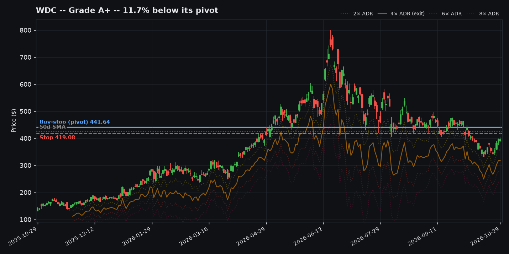
Information Technology -- Grade A+ -- 16.7% below its pivot
Pivot 462.56 / Stop 438.57 / ADR% 5.2%
Why score +4
- QM setup: the stronger of the two strategies in the backtest (+1)
- Stage 1: breaking out of a base, early in a new trend (+1)
- 47% below the 52-week high: a real pullback (+1)
- ADR 5.2%: fast enough to run (+1)
- Price $463: $41 or more (0)
- No shakeout in the last 10 days (0)
Off 52wk high46.9%
Base tightness (10d/50d)1.0x
% above 50-day SMA-6.7%
% above 200-day SMA-5.0%
ADR%5.2%
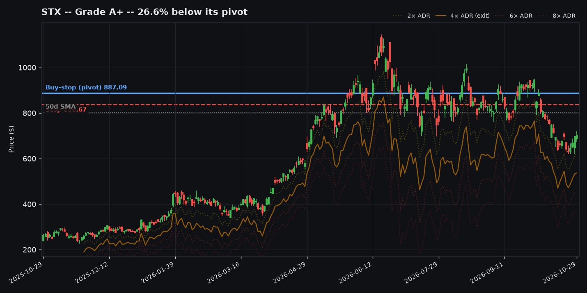
Information Technology -- Grade A+ -- 35.5% below its pivot
Pivot 945.57 / Stop 892.11 / ADR% 5.7%
Why score +4
- QM setup: the stronger of the two strategies in the backtest (+1)
- Stage 1: breaking out of a base, early in a new trend (+1)
- 36% below the 52-week high: a real pullback (+1)
- ADR 5.7%: fast enough to run (+1)
- Price $946: $41 or more (0)
- No shakeout in the last 10 days (0)
Off 52wk high36.1%
Base tightness (10d/50d)1.1x
% above 50-day SMA-13.3%
% above 200-day SMA1.4%
ADR%5.7%
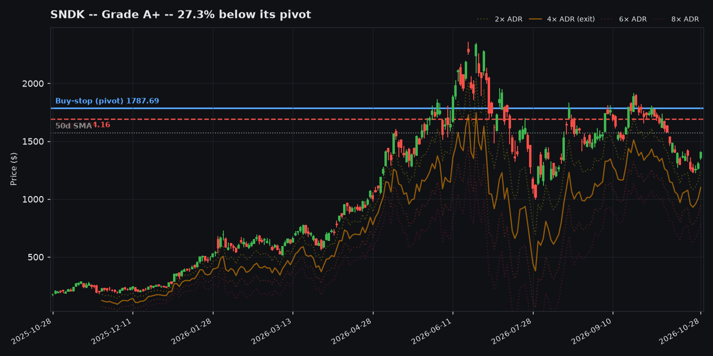
Information Technology -- Grade A+ -- 27.3% below its pivot
Pivot 1787.69 / Stop 1694.16 / ADR% 5.2%
Why score +4
- QM setup: the stronger of the two strategies in the backtest (+1)
- Stage 1: breaking out of a base, early in a new trend (+1)
- 40% below the 52-week high: a real pullback (+1)
- ADR 5.2%: fast enough to run (+1)
- Price $1788: $41 or more (0)
- No shakeout in the last 10 days (0)
Off 52wk high39.8%
Base tightness (10d/50d)1.0x
% above 50-day SMA-10.6%
% above 200-day SMA12.3%
ADR%5.2%
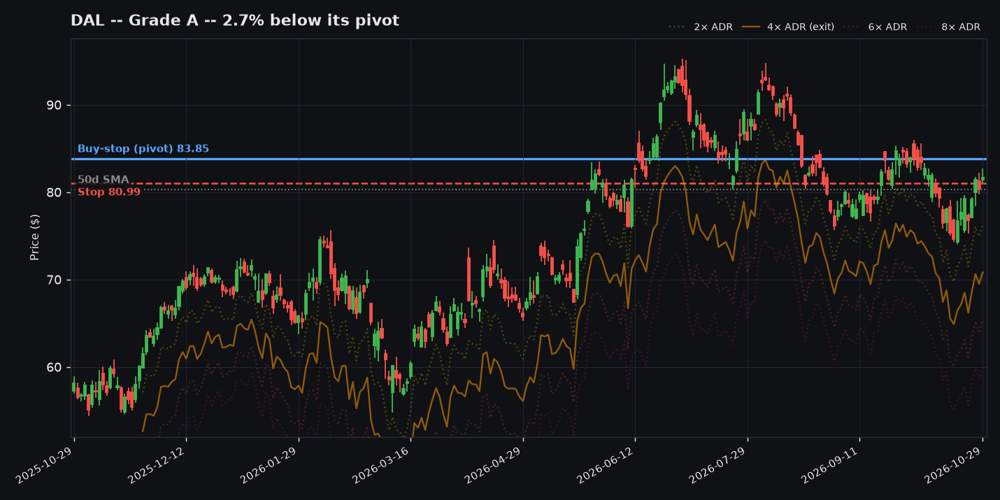
Industrials -- Grade A -- 4.4% below its pivot
Pivot 83.89 / Stop 81.02 / ADR% 3.4%
Why score +3
- Minervini setup: the weaker strategy on honest data (0)
- Stage 2: not Stage 1 (0)
- 14% below the 52-week high: a real pullback (+1)
- ADR 3.4%: fast enough to run (+1)
- Price $84: $41 or more (0)
- Shakeout: dipped under its 20-day low and closed back up, market above its 200-day (+1)
Off 52wk high13.8%
Base tightness (10d/50d)1.6x
% above 50-day SMA0.0%
% above 200-day SMA5.5%
ADR%3.4%

Information Technology -- Grade A -- 5.9% below its pivot
Pivot 158.96 / Stop 152.53 / ADR% 4.0%
Why score +3
- QM setup: the stronger of the two strategies in the backtest (+1)
- Stage 2: not Stage 1 (0)
- 20% below the 52-week high: a real pullback (+1)
- ADR 4.0%: fast enough to run (+1)
- Price $159: $41 or more (0)
- No shakeout in the last 10 days (0)
Off 52wk high20.0%
Base tightness (10d/50d)1.1x
% above 50-day SMA7.6%
% above 200-day SMA30.2%
ADR%4.0%

Information Technology -- Grade A -- 6.5% below its pivot
Pivot 179.22 / Stop 171.96 / ADR% 4.0%
Why score +3
- QM setup: the stronger of the two strategies in the backtest (+1)
- Stage 2: not Stage 1 (0)
- 6% below the 52-week high: a real pullback (+1)
- ADR 4.0%: fast enough to run (+1)
- Price $179: $41 or more (0)
- No shakeout in the last 10 days (0)
Off 52wk high6.1%
Base tightness (10d/50d)1.1x
% above 50-day SMA10.6%
% above 200-day SMA29.5%
ADR%4.0%
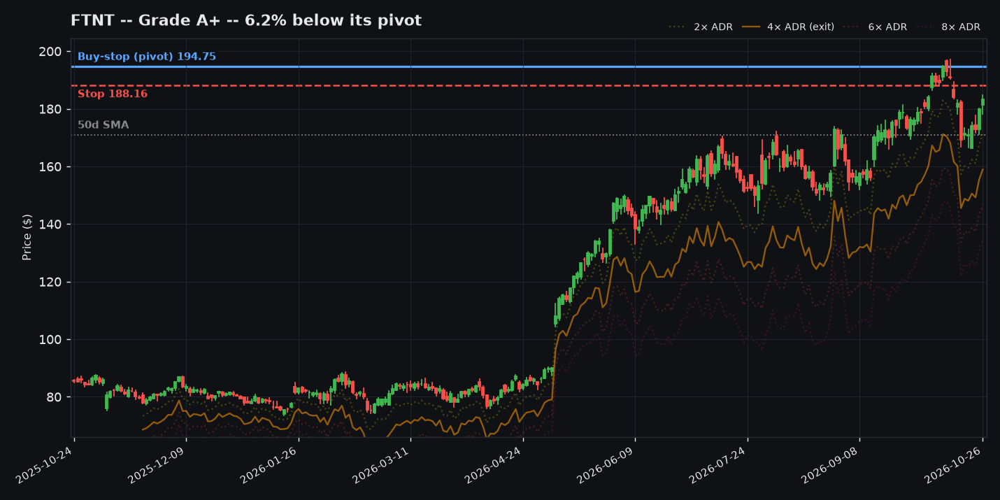
Information Technology -- Grade A -- 11.9% below its pivot
Pivot 194.75 / Stop 187.74 / ADR% 3.6%
Why score +3
- Minervini setup: the weaker strategy on honest data (0)
- Stage 2: not Stage 1 (0)
- 11% below the 52-week high: a real pullback (+1)
- ADR 3.6%: fast enough to run (+1)
- Price $195: $41 or more (0)
- Shakeout: dipped under its 20-day low and closed back up, market above its 200-day (+1)
Off 52wk high10.6%
Base tightness (10d/50d)1.2x
% above 50-day SMA1.3%
% above 200-day SMA36.2%
ADR%3.6%
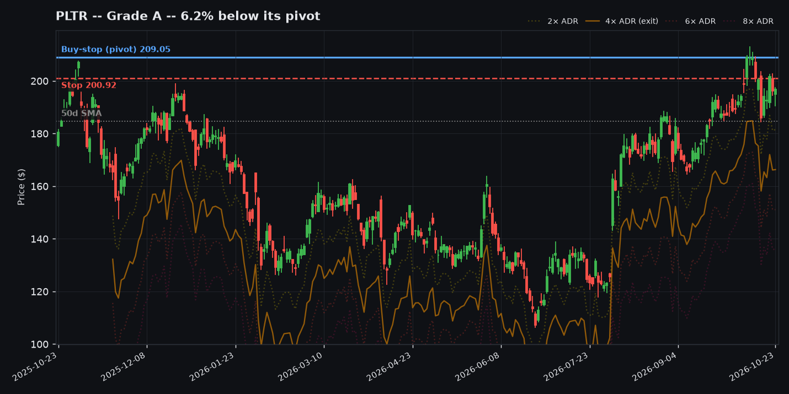
Information Technology -- Grade A -- 6.2% below its pivot
Pivot 209.05 / Stop 200.68 / ADR% 4.0%
Why score +3
- QM setup: the stronger of the two strategies in the backtest (+1)
- Stage 2: not Stage 1 (0)
- 6% below the 52-week high: a real pullback (+1)
- ADR 4.0%: fast enough to run (+1)
- Price $209: $41 or more (0)
- No shakeout in the last 10 days (0)
Off 52wk high5.9%
Base tightness (10d/50d)1.3x
% above 50-day SMA5.7%
% above 200-day SMA28.3%
ADR%4.0%

Information Technology -- Grade A -- 7.0% below its pivot
Pivot 234.44 / Stop 226.00 / ADR% 3.6%
Why score +3
- QM setup: the stronger of the two strategies in the backtest (+1)
- Stage 2: not Stage 1 (0)
- 14% below the 52-week high: a real pullback (+1)
- ADR 3.6%: fast enough to run (+1)
- Price $234: $41 or more (0)
- No shakeout in the last 10 days (0)
Off 52wk high13.9%
Base tightness (10d/50d)1.0x
% above 50-day SMA12.4%
% above 200-day SMA29.4%
ADR%3.6%
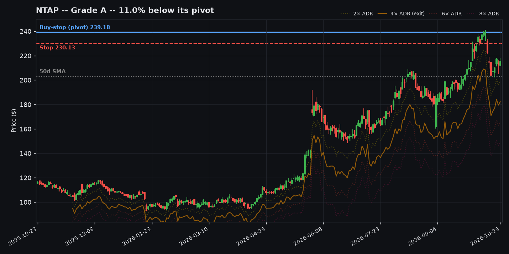
Information Technology -- Grade A -- 6.9% below its pivot
Pivot 239.18 / Stop 230.18 / ADR% 3.8%
Why score +3
- QM setup: the stronger of the two strategies in the backtest (+1)
- Stage 2: not Stage 1 (0)
- 6% below the 52-week high: a real pullback (+1)
- ADR 3.8%: fast enough to run (+1)
- Price $239: $41 or more (0)
- No shakeout in the last 10 days (0)
Off 52wk high6.5%
Base tightness (10d/50d)0.9x
% above 50-day SMA9.5%
% above 200-day SMA50.7%
ADR%3.8%
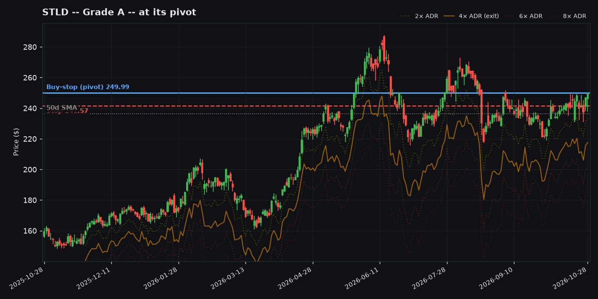
Materials -- Grade A -- at its pivot
Pivot 249.99 / Stop 241.57 / ADR% 3.4%
Why score +3
- QM setup: the stronger of the two strategies in the backtest (+1)
- Stage 2: not Stage 1 (0)
- 11% below the 52-week high: a real pullback (+1)
- ADR 3.4%: fast enough to run (+1)
- Price $250: $41 or more (0)
- No shakeout in the last 10 days (0)
Off 52wk high11.2%
Base tightness (10d/50d)1.4x
% above 50-day SMA5.7%
% above 200-day SMA12.5%
ADR%3.4%

Information Technology -- Grade A -- 3.4% below its pivot
Pivot 250.29 / Stop 241.90 / ADR% 3.4%
Why score +3
- QM setup: the stronger of the two strategies in the backtest (+1)
- Stage 2: not Stage 1 (0)
- 8% below the 52-week high: a real pullback (+1)
- ADR 3.4%: fast enough to run (+1)
- Price $250: $41 or more (0)
- No shakeout in the last 10 days (0)
Off 52wk high8.4%
Base tightness (10d/50d)1.0x
% above 50-day SMA1.8%
% above 200-day SMA22.4%
ADR%3.4%
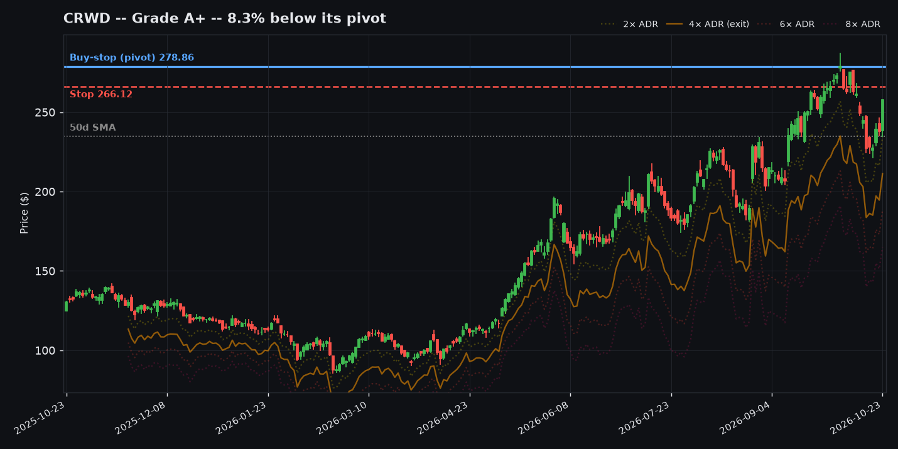
Information Technology -- Grade A -- 4.6% below its pivot
Pivot 278.86 / Stop 266.34 / ADR% 4.5%
Why score +3
- QM setup: the stronger of the two strategies in the backtest (+1)
- Stage 2: not Stage 1 (0)
- 4% below the 52-week high: under 5% (0)
- ADR 4.5%: fast enough to run (+1)
- Price $279: $41 or more (0)
- Shakeout: dipped under its 20-day low and closed back up, market above its 200-day (+1)
Off 52wk high4.4%
Base tightness (10d/50d)1.1x
% above 50-day SMA12.1%
% above 200-day SMA60.8%
ADR%4.5%
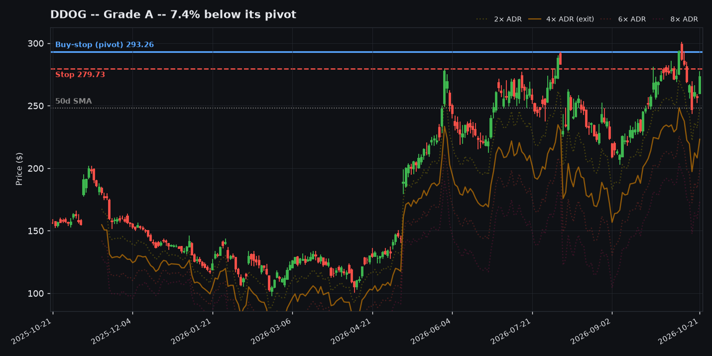
Information Technology -- Grade A -- 5.3% below its pivot
Pivot 293.26 / Stop 279.33 / ADR% 4.8%
Why score +3
- QM setup: the stronger of the two strategies in the backtest (+1)
- Stage 2: not Stage 1 (0)
- 5% below the 52-week high: a real pullback (+1)
- ADR 4.7%: fast enough to run (+1)
- Price $293: $41 or more (0)
- No shakeout in the last 10 days (0)
Off 52wk high5.1%
Base tightness (10d/50d)1.1x
% above 50-day SMA11.1%
% above 200-day SMA41.3%
ADR%4.8%